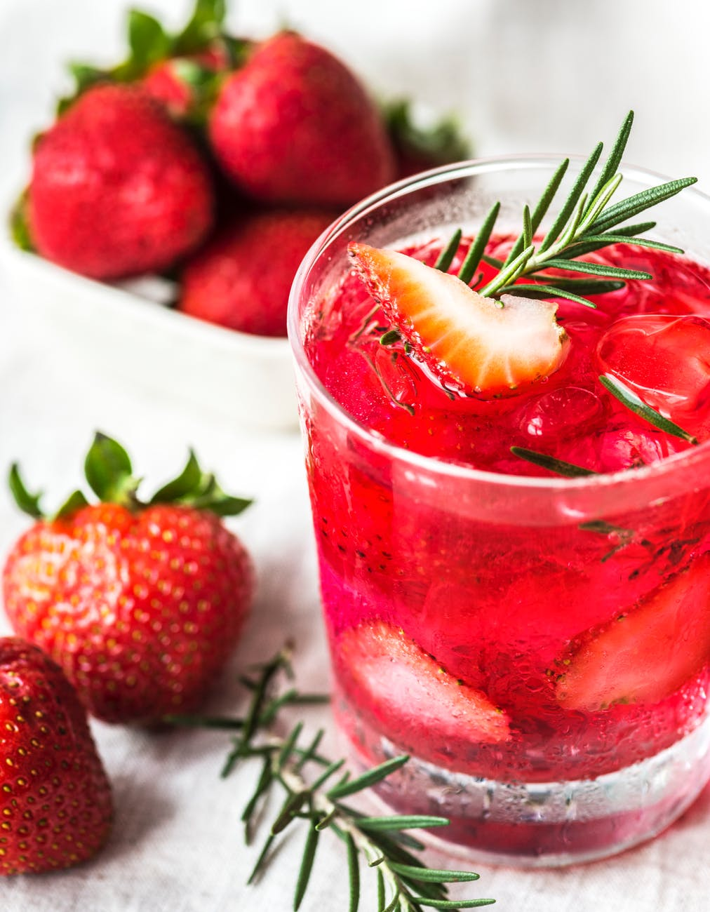

Restauracja Cynamon


Cynamon jest położony w samym sercu warszawskiego Powiśla, w którym przez cały dzień serwuje się sezonowe jedzenie, wieczorem celebruje życie nocne, a w weeeknd tańczy do rana.

Szef kuchni kieruje się zawsze zasadą Comfort Food - prostota i tradycyjne receptury. Stworzone zostało autorskie menu oparte na najwyższej jakości sezonowych produktów. Sprawdź menu i zapytaj o dostępność!


Krem z groszku
Grillowany dorsz z karmelizowaną marchewką
Sernik pod chałwową pierzynką
Rosół z domowym jajecznym makaronem
Burger Jack Daniels z krążkami cebulowymi
Pudding chlebowy z figami
Poszukujemy zawsze nietuzinkowych połączeń smakowych, które zaspokoją najbardziej wymagających smakoszy. Nasz sommelier dobiera gościom odpowiedni bukiet wina do wybranych potraw.

Wszystkie syropy i kordiały produkujemy sami bez użycia sztucznych dodatków, dlatego nasze koktajle smakują po prostu idealanie.
